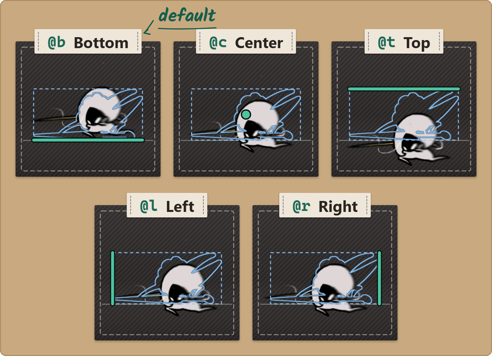

B5 Bigger Art — Anchors
Sprites · for creators.
Your art can be bigger than the original: a longer needle, a taller crest.
The anchor decides where the extra room goes.
You'll be able to: enlarge a sprite without it drifting out of place, pick the right anchor, set it from the filename or in Graphics, and reach for the precise pivot when the five presets can't say what you mean.
Before you start: B1. This only matters once a replacement outgrows its slot — for same-size art, none of this applies.
Editing an animation? The Animation Canvas does this page's work for you: Compile places every frame and writes the anchor tags itself. Hand-author tags for single or static sprites, or when you work outside the canvas.
Why an anchor is needed at all
Say the vanilla sprite is a 64×96 head, and you draw a 128×128 one. Stitchwork enlarges that slot to fit your art — but it has to decide where the bigger slot sits relative to the body:
- Bottom (the default): the neck/chin stays put, art grows up and out. Usually right — most character art stands on the ground and you want the ground contact fixed.
- Center: art grows equally in all directions, which floats the head higher than you meant.
- Top: art hangs from the top edge and grows down.
Get this wrong and an enlarged sprite slides off its body. The anchor is how you keep it pinned.

When it matters (and when it doesn't)
- Only for replacements LARGER than the vanilla slot. That's the whole feature.
- Same-size or smaller → the tag is inert. The slot never expands, so there's nothing to anchor. (Graphics still lets you set one; it just has no visible effect until the art is enlarged.)
The five anchors
Five, not nine — Stitchwork deliberately omits the corners. The unspecified axis always centers:
top (@t)
left (@l) center (@c) right (@r)
bottom (@b)- bottom — the default, and you never type it; an untagged file is bottom-anchored. Right for anything that stands on the ground.
- center — for art that radiates from a point (effects, symmetric items).
- top — for things that hang (a light beam, a banner).
- left / right — pin that edge, grow away from it.
Need a corner? Pick the axis that matters most; the other centers.
Setting an anchor — the filename tag
The anchor lives in the PNG file name, as a trailing @x:
Sprites/{Collection}/{Material}/{Sprite}@t.png| File name | Anchor |
|---|---|
crest@t.png | top |
crest.png | bottom (default) |
crest@b.png | bottom (explicit — same as untagged) |
crest@l.png / crest@r.png | left / right |
crest@c.png | center |
Stitchwork strips the tag when matching the file to a sprite, so crest@t.png still replaces the sprite named crest — the tag only steers the anchoring of an enlarged replacement.
Don't ship two files for one sprite. If crest.png and crest@t.png both sit in the same folder, that's a conflict; Stitchwork resolves it deterministically (lexically-first wins, so untagged beats @t), but you should delete the duplicate so the result is the one you meant.
Setting an anchor in Graphics
- Open Graphics (
3) in Animation mode. Select the object and the clip. Step to the frame. In the console, This sprite has an Anchor row: five buttons, top, bottom, left, right and center (hover for the names). The lit one is your file's current anchor; untagged counts as bottom. - Click one, and Stitchwork renames your working-folder PNG to carry (or drop, for bottom) the matching tag: top renames
crest.png→crest@t.png. The sprite reloads at once, without a scene reload. - If a file with the target name already exists, the rename is refused rather than clobbering it, and the line under the row says "Can't set the anchor: … already exists. Remove the duplicate first."
The row reminds you that the anchor affects enlarged replacements only. It is disabled in two cases, and the line under it says why:
- No replacement file yet: Edit creates one; then it can be anchored.
- Supplied by pack: an active pack's file wins for this sprite, and the buttons only rename files in your working folder.
The buttons work on plain and preset-tagged names (@t @b @l @r @c). On an @p file (the canvas compile's output), no button is lit, and a click replaces the precise pivot with that preset. They don't touch an instance-specific folder or a Clips/ file; rename those by hand.

The precise pivot — @p<px>_<py>
The five presets are shorthands for the most common placements. When you need one they can't express — an asymmetric expansion like +50 px on top but only +25 on the bottom — there's the general form:
Sprites/{Collection}/{Material}/{Sprite}@p120_64.png@p<px>_<py> places your replacement so that the pixel at (px from the left, py from the bottom) lands on the vanilla sprite's pivot. The five presets are just specific (px, py) choices of this same placement, so anything they do, @p can do — plus everything they can't.
You'll rarely hand-write this — it's most often produced for you: the Animation Canvas compile stamps an @p tag on any frame you grew past its footprint, so its registration is exact. But it's a real, documented tag, and if you're placing an asymmetric enlargement by hand, it's the precise tool.
Pack vs. root
- Packs ship the tagged name directly — a pack author just names the file
{Sprite}@t.pnginside…/Sprites/{coll}/{mat}/. - The Anchor buttons act on your working folder (
<Game folder>/) — they never rename files inside other people's pack folders.Stitchwork/ Sprites/ … - If several packs supply the same sprite, the usual priority order decides which file (and tag) wins.
Migrating from anchors.txt
Older packs used a Sprites/ sidecar. It's no longer read — Stitchwork logs a one-time warning if it finds one, and the Pack Doctor report flags it. To migrate: for each spriteName = anchor line, rename that sprite's PNG to carry the matching tag, then delete anchors.txt. The old nine points collapse to five — for a corner, choose the axis that matters most; *-center → that side; plain center → @c; bottom-center → untagged.
Troubleshooting
- "My enlarged sprite is positioned wrong." Check the tag on the file name, and confirm the file is at the right collection+material path.
- "I set an anchor but nothing happened." The anchor only shows when the replacement is larger than the slot. Same-size art → the tag is inert.
- "Graphics refused to set my anchor." A file with the target tagged name already exists. Remove the duplicate, then set it again.
- "The Anchor buttons are grayed out." Read the line under them: either you have no replacement file yet, or a pack supplies the sprite.
- "My old
anchors.txtstopped working." Stitchwork no longer reads it; the filename tags replace it. See Migrating fromanchors.txtabove.
Next
- The full path suite → Sprite Paths Reference
- Grown animation frames, with
@pautomated → Animation Canvas